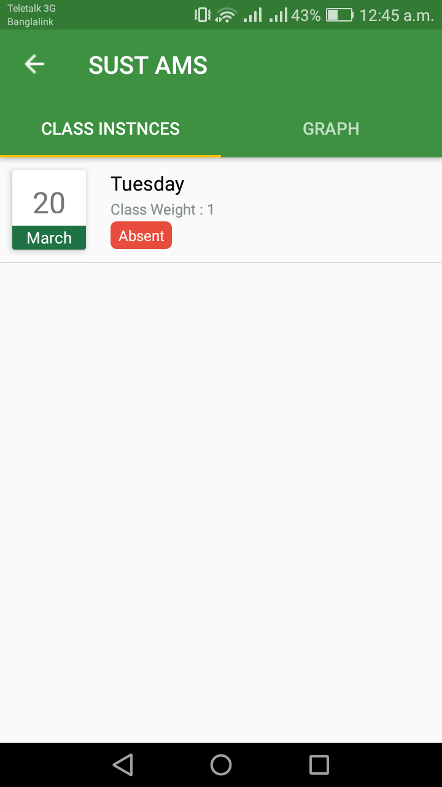

You can easily check the past records of a student. Just follow the steps Past Record -> Select a Course -> Select a student of selected course
Then you will find a screen like aside. It has two tab. Class Instance and Graph. Tapping on the tab will show you different informations.

Fig - Past Record
From the Class Instance tab you will be able to find the past record of individual class instance. And from the Graph tab you will be able to find the Overall Graphical Statistics of the selected student in the selected course. The graph data is presented in Percentage Value The Screen will look like the following image.

Fig - Graph Statistics